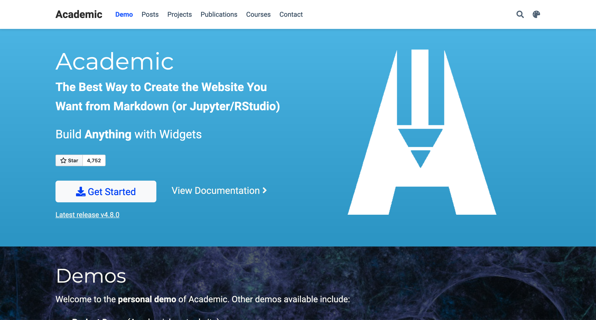
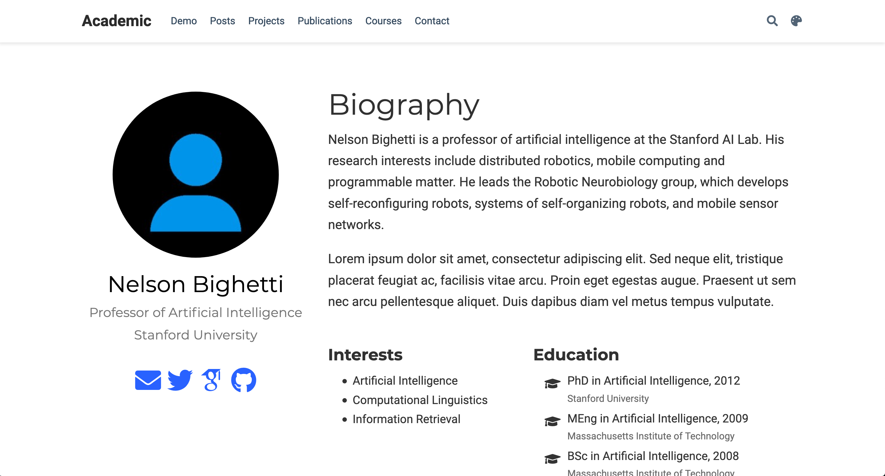
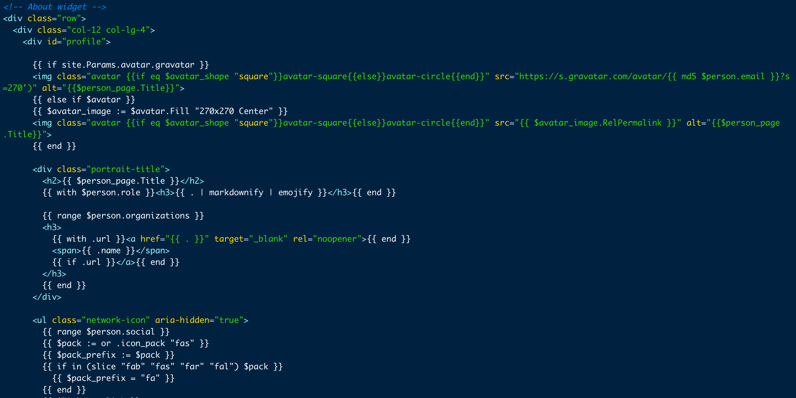
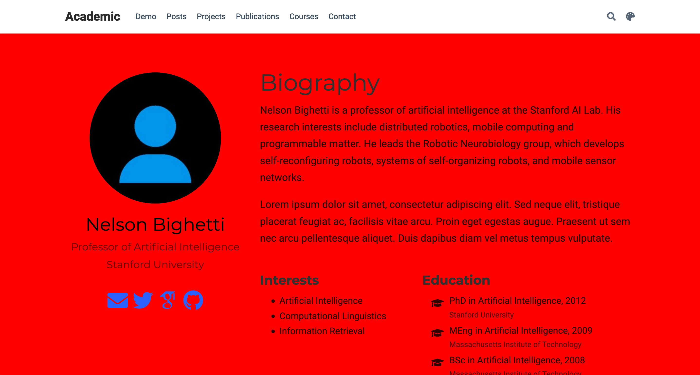
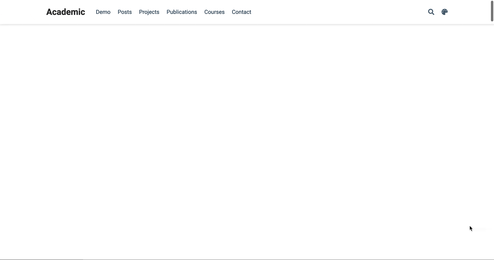

The R package blogdown is an incredibly powerful tool—it allows R users with little to no familiarity in web development to build a fully functional, content-oriented, beautiful website using a language they’re already familiar with. It’s built on top of
Hugo, the world’s (self-proclaimed) ‘fastest framework for building websites,’ which comes with a
variety of themes suitable for a variety of different uses.
Within the R community, perhaps one of the most popular themes is Hugo Academic. As the name implies, the theme is geared toward those working academia—more generally, it provides a great starter kit for those interested in showcasing blog posts, projects, and other media on a minimalist site.
Given its popularity, the Hugo Academic landing page is far-too-familiar. Although not unattractive, no one is particularly surprised or engaged by the standard Academic homepage.
One way to spice up Hugo Academic is to use animations on our home pages. In this post, I outline three simple steps and a few lines of code to create a fully functional, beautifully-animated landing page. By leveraging the flexibility of Hugo’s framework, and introducing a little bit of HTML and CSS, we can take our Hugo Academic home pages from zero to hero (at least, in terms of animation!).
This tutorial assumes you are starting a Hugo Academic site from scratch. If you already have a Hugo Academic website up and running, you should be able to skip step 0 and modify the remaining steps slightly.
It also assumes that you have little to no knowledge about HTML and CSS (which is fine!). If that’s not the case, you can likely go ahead and skip to step 3.
If you’d like to skip this tutorial and just start a Hugo Academic site that’s animated, feel free to fork my repository which includes all the code you need for an animated homepage. The repo includes my about.html page and a custom SCSS file!
Step 0) Make your ‘about’ page your actual homepage
By default, the Hugo Academic theme’s first section is a grandiose self-introduction (I guess the creators of the theme do deserve such credit). Before we incorporate any of our animations, lets go ahead and make our ‘about’ page the landing page users first see when they visit our site. This requires us to find the files hero.md and demo.md, and in each of those files, set active equal to false. That takes our home page from this:

to this:

(As you progress, you might have to make additional small changes, such as removing ‘Demo’ from the navbar menu.)
Step 1) Create about.html
The first real step in our process is modifying the default layout of our about page. More specifically, our animations will rely on CSS selectors which our about page currently doesn’t have. In order to animate certain elements, we will need unique identifiers, such as CSS classes and IDs, to target.
To play around with our about page, we take advantage of Hugo’s flexibility toward structural changes. As they say on their website:
Hugo permits you to supplement or override any theme template or static file, with files in your working directory.
In order to override Hugo Academic’s about page, we need to copy their existing structure into our own folder and modify it there. To do so, navigate to themes/hugo-academic/layouts/partials/widgets/ and copy the file titled about.html.
Now, create a new file path in your root directory titled layouts/partials/widgets/. Copy your about.html file here. (Look familiar? All we’re doing is recreating about.html in a personal version of our project, thus overriding the about.html that Hugo Academic provides.)
layouts/partials/widgets/. You can find my file here. This will also allow you to skip step 2 and move on to step 3!
Step 2) Customize your file
With that newly created about.html living in layouts/partials/widgets/, you may notice that your homepage looks the exact same. This is correct! In this step, we’ll customize that html file so that it can be animated.
Within about.html, you’ll notice all of your page’s elements in order of appearance, despite a lot of extra characters that don’t make much sense. It should look like this:

Throughout step 3, we’ll use each element’s ‘class’ to target it for animations. In the above screenshot (and in your about.html page!), you’ll see classes scattered throughout. Although learning everything about CSS and CSS selectors is beyond the scope of this tutorial, I would recommend reading a brief primer on classes and selectors in CSS, which can be found
here.
In this step, we’ll add classes to the elements we want to animate. (Again, if this seems to be overwhelming, feel free to copy my HTML file.) Specifically, we’ll make three changes.
First, we’ll add a class of biography-title to our h1 (header 1) element. Here, we will change
<h1>{{ $page.Title | markdownify | emojify }}</h1>{{ end }}
to
<h1 class='biography-title'>{{ $page.Title | markdownify | emojify }}</h1>{{ end }}
Next, we need to wrap the main content, aka the big text blocks in the middle of the page, in their own class too. Here, we take
{{ $person_page.Content }}
and wrap it in a div, so it looks like this:
<div class='main-content'>
{{ $person_page.Content }}
</div>
Finally, we’ll add a class to our interests and and education blocks. We can take this row:
<div class="row">
{{ with $person.interests }}
<div class="col-md-5">
<h3>{{ i18n "interests" | markdownify }}</h3>
<ul class="ul-interests">
{{ range . }}
<li>{{ . | markdownify | emojify }}</li>
{{ end }}
</ul>
</div>
{{ end }}
{{ with $person.education }}
<div class="col-md-7">
<h3>{{ i18n "education" | markdownify }}</h3>
<ul class="ul-edu fa-ul">
{{ range .courses }}
<li>
<i class="fa-li fas fa-graduation-cap"></i>
<div class="description">
<p class="course">{{ .course }}{{ with .year }}, {{ . }}{{ end }}</p>
<p class="institution">{{ .institution }}</p>
</div>
</li>
{{ end }}
</ul>
</div>
{{ end }}
</div>
and replace it with this:
<div class="row">
{{ with $person.interests }}
<div class="interests-div col-md-5">
<h3>{{ i18n "interests" | markdownify }}</h3>
<ul class="ul-interests">
{{ range . }}
<li>{{ . | markdownify | emojify }}</li>
{{ end }}
</ul>
</div>
{{ end }}
{{ with $person.education }}
<div class="education-div col-md-7">
<h3>{{ i18n "education" | markdownify }}</h3>
<ul class="ul-edu fa-ul">
{{ range .courses }}
<li>
<i class="fa-li fas fa-graduation-cap"></i>
<div class="description">
<p class="course">{{ .course }}{{ with .year }}, {{ . }}{{ end }}</p>
<p class="institution">{{ .institution }}</p>
</div>
</li>
{{ end }}
</ul>
</div>
{{ end }}
</div>
Now, we can reference the existing CSS classes, and our new ones, in our pretty animation in Step 3!
Step 3) Add CSS
Now that we’ve created our classes, we can target them in a CSS file and tell them exactly how to animate.
But first, you’ll need to create a custom CSS file in your root directly. In your assets/ folder, create a new folder called scss/ and within this folder, create a new file called custom.scss.
Within custom.scss, we’re going to target everything within our about section. In order to do so, we create a selector that targets everything within the ID of about.
#about {
/* Some CSS will go here soon! :) */
/* This is a comment, by the way. */
}
To ensure that we’ve targeted the right section, we can go ahead and add the property background-color: red to that element. As the name implies, this will make the section ✨ red. ✨
#about {
background-color: red
}
As we expected, our section background is now an (unbelievably ugly shade of) red.
(Now remove that property immediately! This is not quite the welcome we want for our visitors.) We can also target elements within the section by nesting new selectors inside of #about. For example, if we wanted to change the color of our ‘biography’ title text, we could do so with the following code. (This is because we created a class named biography-title in step 1):
#about {
.biography-title {
color: red;
}
}
about is targeted with a pound (#) and biography-title is targeted with a period (.). This is the difference between CSS IDs and classes. If you’re curious about the distinction, here’s a helpful guide.
Now that we know how to target specific objects within our about section, we can animate our first element!
Step 3A) Your first animation!
Creating your first animation is as simple as a few lines of code. To illustrate, we’ll test out an animation which changes our text from red and invisible to black and visible. In the code, we’ll have to do two things:
- Create an animation with
@keyframes
@keyframes yourfirstanimation {
from {opacity: 0; color: red;}
to {opacity: 1; color: black;}
}
- Bind the animation to an element
.biography-title {
animation: yourfirstanimation 5s forwards;
}
To break down the above code, we create an animation that has a start point (0%) and an end point (100%). At both of these points, we define CSS properties, such as color and opacity, seen above. When we bind the animation to an element, which is as simple as animation: <animation_name> <duration> <fill_mode>, CSS deals with all the inbetween and automatically creates a smooth transition! (Fill mode is the most complicated of these three properties, but for our purposes we will always be using forwards. For more information, visit
this page.)
Altogether, this code creates this output:
#about {
@keyframes yourfirstanimation {
0% {opacity: 0; color: red;}
100% {opacity: 1; color: black;}
}
.biography-title {
animation: yourfirstanimation 5s forwards;
}
}

Of course, we don’t want a 5 second animation, nor do we want our text to start off as red. A cleaner animation might leverage the power of CSS to modify an element’s position. In our case, we want an element to slide in from the right side of the screen, and so we make a few tweaks to the code above. Let’s make a new animation called slide-from-right which starts (at keyframe 0%) with our element 150% to the right of its original position (therefore off the screen) and ends (at keyframe 100%) with it at its original position. This involves the use of translateX, which you can read about
here.
@keyframes slide-from-right {
0% {transform: translateX(150%)}
100% { transform: translateX(0%); }
}
.biography-title {
animation: slide-from-right 1s forwards;
}

There is one slight improvement we can make on the above transition. Specifically, we can call an easing function on our animation.
Easing functions give a more natural feel to a transition’s flow—rather than our object flying in at a perfectly linear rate, we can add some personality by specifying its speed at different points in the transition. To find an easing function, visit
easings.net, which allows you to visualize all of the different ways to modify your transition’s ease. (For this tutorial, I chose a clean-looking “easeInOutQuint“ function, which looks like this: cubic-bezier(0.83, 0, 0.17, 1).)
Step 3B) Don’t Wait to Delay
We want our homepage to have more than just one title animation. We might also want to animate the paragraphs below it, with the same ’slide from right’ transition we defined earlier. While doing this, we can add one property to our element to make the overall transition seem more fluid: animation-delay. As the name suggests, this property defines how long the browser should wait before it begins the transition you’ve specified. Animating our main-content div is as simple as copying the above code and adding a 100 millisecond animation delay.
.main-content {
animation: slide-from-right 1s cubic-bezier(0.87, 0, 0.13, 1) forwards;
animation-delay: 100ms;
}
In combination with above, this creates a transition that looks like this:

Nice! That looks clean. It looks like those two text blocks are racing to greet your new site visitor :)
Step 3C) To the Left!
Let’s go ahead and replicate that ’slide in’ transition for our profile on the left side of our webpage. As you could probably gather, this is as simple as copying the above code and changing the value in translateX from 150% to -150% (from just outside the right side of our webpage
to the left!). As above, we’ll define this transition in a @keyframes rule and apply it to our CSS transition afterward.
@keyframes slide-from-left {
0% {transform: translateX(-150%)}
100% { transform: translateX(0%); }
}
#profile {
animation: slide-from-left 1s cubic-bezier(0.87, 0, 0.13, 1) forwards;
}

Step 3D) Finally, the Fade
The only thing not yet animated on our page are the ‘interests’ and ‘education’ content blocks. Of course, you might not want these on your homepage (my educational journey isn’t yet formidable enough to warrant its own section on my homepage!). But for the sake of animating the homepage as its configured by default, let’s go ahead and have those content blocks fade in once the sliding transitions complete.
If you’ve been paying attention to the prior @keyframes rules, you might have guessed that the code would look like this:
@keyframes fade-in {
0% {opacity: 0}
100% {opacity: 1}
}
… and you would be correct!
Now, we apply this fade-in rule to both our interests-div and our education-div, which we created in step 1. But notably, we want to wait to fade in each of these divs until after our content has slid in from either side of the webpage. And so, we’ll once again use the animation-delay property. Because our slide-in animations take one second to complete, we can begin our fade-in animations after a one-second delay. To make the transition a little more visually appealling, we can also stagger them, so the education-div fades in half a second after interests-div.
.interests-div {
opacity: 0;
animation: fade-in 1s forwards;
animation-delay: 1s;
}
.education-div {
opacity: 0;
animation: fade-in 1s forwards;
animation-delay: 1.5s;
}
Now, we have a final homepage that looks like this:
To make our SCSS file more robust across different browsers, we can take our completed file and put it into the CSS Autoprefixer. This adds additional lines of code to our CSS file so that all browsers render the same animations upon page load. Your completed SCSS file should look like this.
Extending Animations
This tutorial is meant to teach you the essentials of how to animate your homepage (for any Hugo site, not just Academic). Specifically, you should be able to 1) create and identify CSS elements via their classes and IDs, 2) target them using CSS, and 3) animate them using @keyframes rules. Although easier said then done, applying these three rules will go a long way in making your homepage much more appealling to new visitors.
The complete power of CSS animations is not covered in this tutorial. Further applications of animations could do much more than just animate an object’s position. I leave that to you!
For those that are interested, my homepage is chock-full of CSS properties which make it unique from most; some visitors are surprised to hear that my site is Hugo Academic at all!

For those interested, the code for my personal site (which, like this one, has an about.html and a custom.scss file that are carrying the load) can be found
here. I look forward to seeing your animated homepages!
Connor Rothschild
Undergraduate at Rice University
I’m a senior at Rice University interested in public policy, data science and their intersection. I’m most passionate about translating complex data into informative and entertaining visualizations.